PROJECTIVE GEOMETRY
Projective Geometry Rumah Adat Selayar
Rumah Adat Selayar dibangun dengan prinsip keseimbangan, keselarasan, dan proporsi yang menggambarkan konsep geometri tradisional seperti simetri, kesebangunan, perbandingan ukuran, serta bentuk bangun ruang. Melalui pendekatan projective geometry, bentuk tiga dimensi rumah dapat dipahami melalui hubungan titik, garis, bidang, dan perspektif visual.
A. Projective Geometry Rumah Adat Selayar
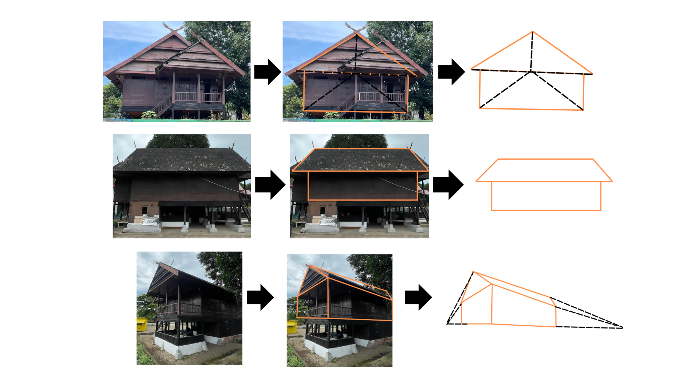
Melalui pendekatan proyeksi ini, bentuk tiga dimensi Rumah Adat Selayar dapat ditransformasikan ke dalam bidang dua dimensi tanpa menghilangkan hubungan antar titik, garis, dan bidangnya. Dengan demikian, pengunjung dapat memahami bagaimana struktur arsitektur tradisional dapat dibaca melalui prinsip geometri dan perspektif.
B. Bentuk Geometri dalam Desain Rumah Adat Selayar
1. Teras Depan
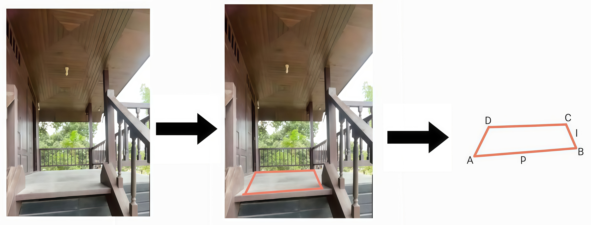
Bagian depan rumah merupakan teras yang berbentuk persegi panjang dan berfungsi sebagai tempat menerima tamu sekaligus ruang transisi sebelum masuk ke bagian dalam Rumah Adat Selayar. Secara geometris, bentuk persegi panjang pada teras memperlihatkan keteraturan ukuran dan pemanfaatan ruang yang efisien.
2. Ruang Tengah
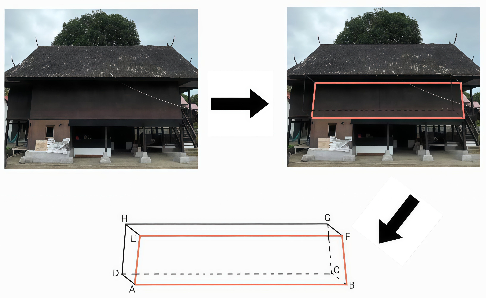
Ruang tengah merupakan ruang utama rumah yang dapat dimodelkan sebagai bentuk balok. Ruangan ini berfungsi sebagai tempat beraktivitas, berkumpul bersama keluarga, dan mengadakan acara adat. Dalam kajian geometri, ruang tengah memperlihatkan konsep panjang, lebar, tinggi, volume, dan proporsi ruang.
3. Ruang Belakang dan Dapur
a. Dapur Rumah
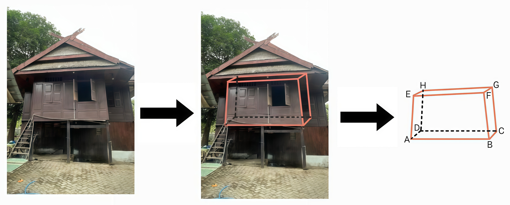
Bagian belakang rumah berfungsi sebagai dapur dan tempat menyimpan hasil panen. Ruangan ini memiliki tinggi yang lebih rendah daripada ruang tengah dan dapat dimodelkan sebagai bentuk balok. Perbedaan ukuran antara ruang tengah dan dapur menunjukkan adanya konsep perbandingan dan skala.
b. Atap Dapur
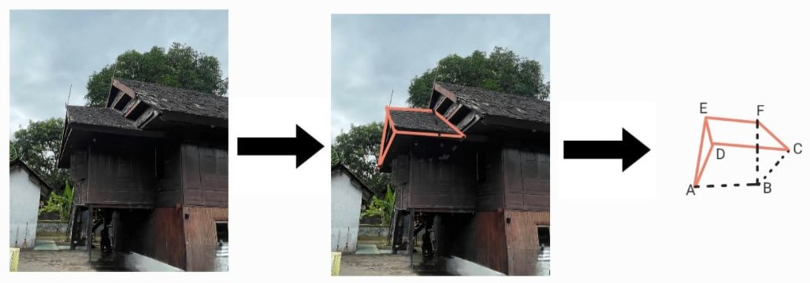
Atap dapur membentuk prisma segitiga sederhana yang menyatu dengan struktur atap pelana rumah utama. Bentuk ini dapat dikaji melalui konsep segitiga, bidang miring, volume prisma, dan kesesuaian bentuk atap terhadap fungsi aliran air hujan.
4. Kolong Rumah
a. Kolong Rumah
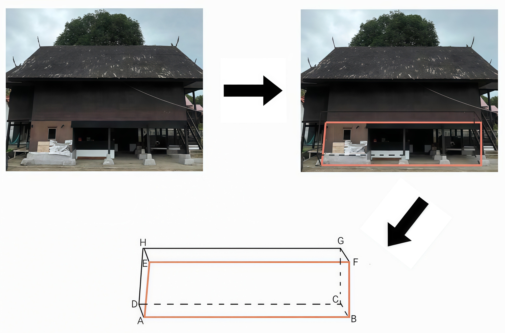
Kolong rumah berbentuk balok dan berfungsi sebagai ruang sirkulasi udara serta tempat penyimpanan barang. Pada rumah panggung, kolong juga menjadi bagian penting yang menyesuaikan bangunan dengan kondisi lingkungan. Secara matematis, kolong dapat dianalisis melalui konsep volume, tinggi ruang, dan perbandingan ukuran.
b. Tiang Penyangga
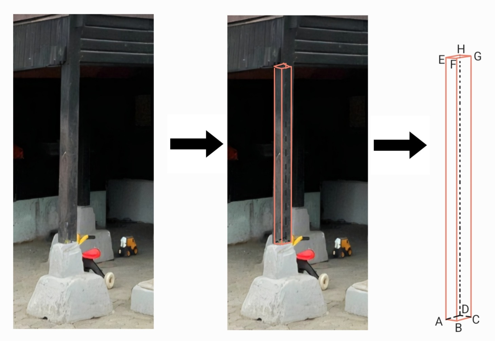
Tiang-tiang yang disusun pada bagian bawah rumah membentuk struktur balok yang menjadi dasar kekuatan bangunan. Susunan tiang tersebut menunjukkan pola pengulangan, kesejajaran, dan simetri. Dalam geometri, elemen ini dapat dikaji melalui konsep balok, garis vertikal, jarak antar titik, dan distribusi beban.
c. Alas Tiang
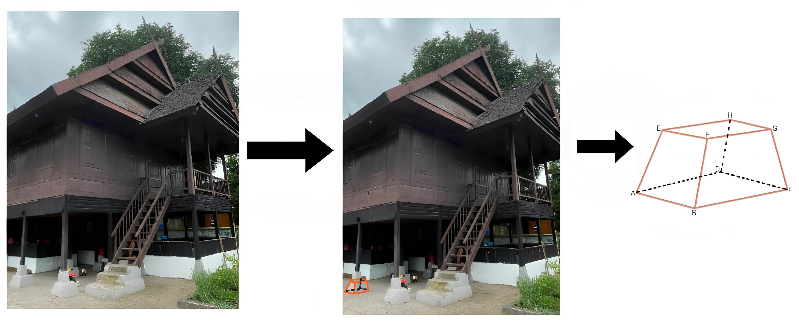
Tiang rumah berdiri di atas batu penopang yang dapat dimodelkan sebagai prisma trapesium. Bentuk ini dirancang agar berat rumah tersebar merata ke tanah. Secara matematis, alas tiang dapat dianalisis melalui konsep trapesium, luas alas, volume prisma, dan kestabilan struktur.
5. Atap Pelana
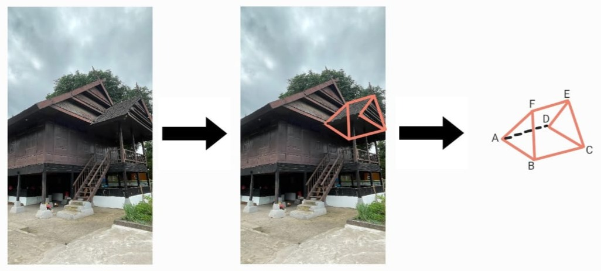
Atap rumah berbentuk prisma segitiga dan menggunakan bahan dasar bambu atau rumbia. Bentuk ini digunakan agar aliran air hujan dapat mengalir ke bawah sehingga tidak merembes ke dalam rumah. Pada sudut pandang projective geometry, atap pelana memperlihatkan garis miring, bidang segitiga, dan hubungan perspektif antara bagian depan, belakang, serta sisi samping atap.
6. Jendela Rumah
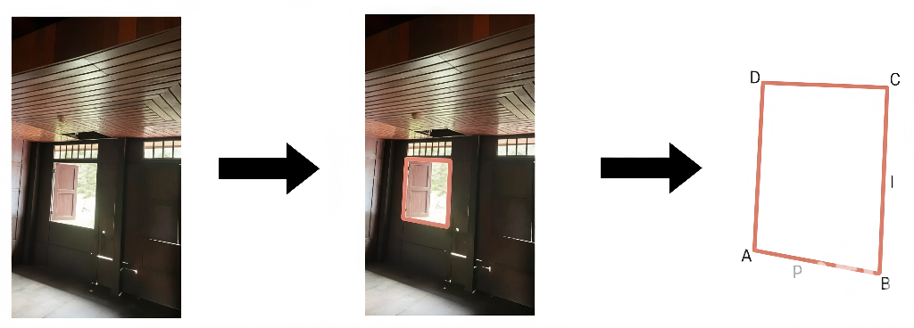
Pada umumnya, jendela berbentuk persegi panjang vertikal dengan rasio antara tinggi dan lebar sekitar 2 : 1. Bentuk jendela ini dapat dikaji melalui konsep persegi panjang, perbandingan, skala, dan kesebangunan.
7. Pintu Rumah
.jpg)
Bentuk pintu pada Rumah Adat Selayar sama dengan bentuk jendela, yaitu persegi panjang vertikal. Tinggi pintu umumnya sekitar dua kali lebar pintu atau dapat dituliskan dengan rasio 2 : 1. Kesamaan bentuk antara pintu dan jendela menunjukkan konsep kesebangunan.
8. Tangga
a. Anak Tangga
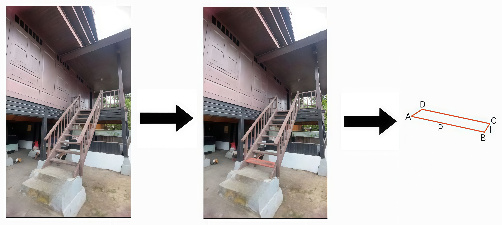
Tangga Rumah Adat Selayar tersusun dari papan-papan kayu yang berbentuk persegi panjang. Susunan anak tangga menunjukkan pola berulang, jarak yang relatif teratur, dan konsep perbandingan ukuran.
b. Sisi Miring Tangga
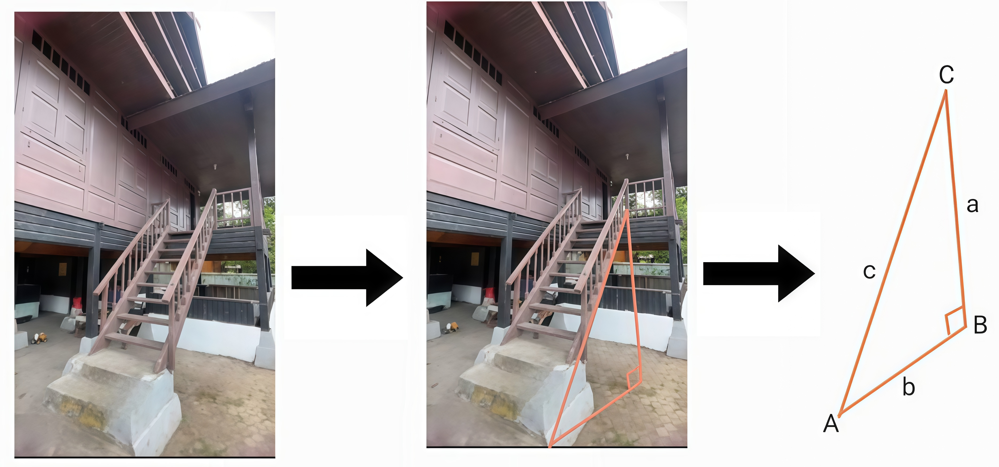
Apabila dilihat dari samping, struktur tangga membentuk segitiga siku-siku. Bentuk ini dapat dikaji melalui konsep tinggi, alas, sisi miring, sudut kemiringan, dan perbandingan panjang.
c. Pegangan Tangga
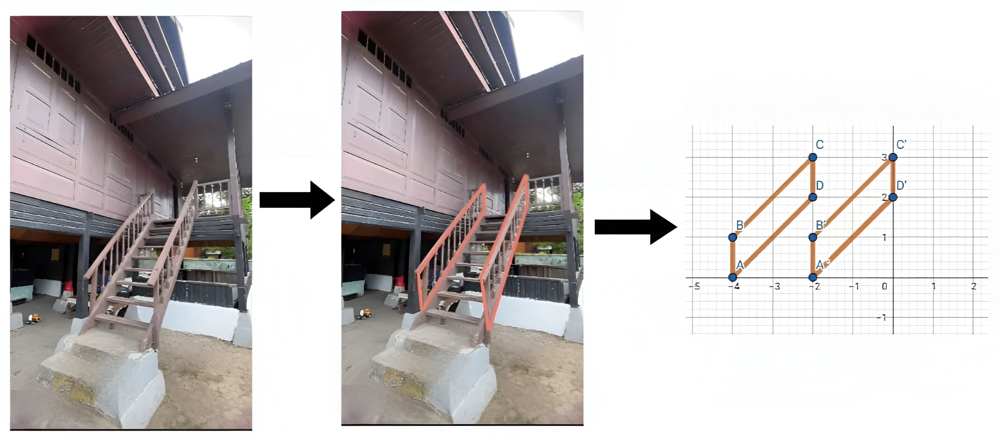
Tiang pegangan tangga yang berada di sisi kanan dan kiri tersusun sejajar. Susunan ini menunjukkan konsep simetri, kesejajaran, dan pola translasi. Dalam konteks visual, pegangan tangga juga memperlihatkan hubungan garis-garis sejajar yang dapat diamati melalui perspektif proyektif.